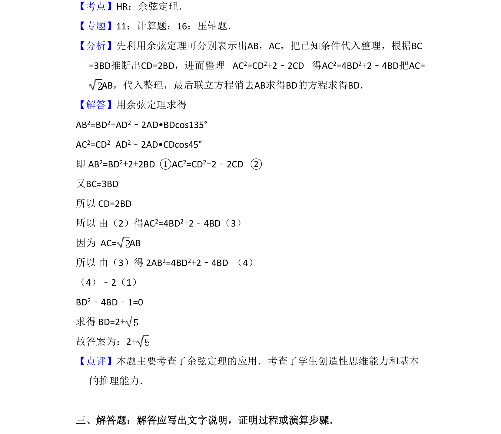

考点：余弦定理 方程思想 几何计算
本题考查利用余弦定理建立方程，结合几何条件求解三角形边长。

📄 原 PDF 第 11 页：
素材/真题/吉林/2008-2024·（吉林）数学高考真题/2010年高考数学试卷（文）（新课标）（解析卷）.pdf
16．（5分）在△ABC中，D为BC边上一点，BC=3BD，AD=，∠ADB=135°．若A C= AB，则BD= 2+ ．
【考点】HR：余弦定理．菁优网版权所有 【专题】11：计算题；16：压轴题． 【分析】先利用余弦定理可分别表示出AB，AC，把已知条件代入整理，根据BC =3BD推断出CD=2BD，进而整理 AC 2=CD2+2﹣2CD 得AC 2=4BD2+2﹣4BD把AC= AB，代入整理，最后联立方程消去AB求得BD的方程求得BD． 【解答】用余弦定理求得 AB2=BD2+AD2﹣2AD•BDcos135° AC2=CD2+AD2﹣2AD•CDcos45° 即 AB2=BD2+2+2BD ①AC2=CD2+2﹣2CD ② 又BC=3BD 所以 CD=2BD 所以 由（2）得AC2=4BD2+2﹣4BD（3） 因为 AC= AB 所以 由（3）得 2AB2=4BD2+2﹣4BD （4） （4）﹣2（1） BD2﹣4BD﹣1=0 求得 BD=2+ 故答案为：2+ 【点评】本题主要考查了余弦定理的应用．考查了学生创造性思维能力和基本 的推理能力． 三、解答题：解答应写出文字说明，证明过程或演算步骤．